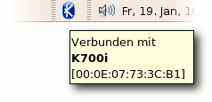
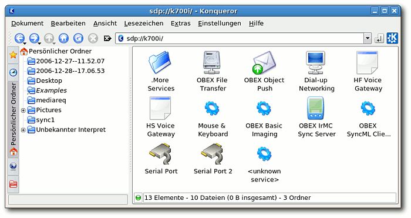
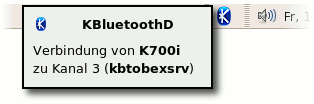
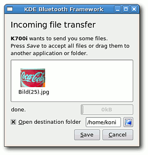

KDEBluetooth
Archivierte Anleitung
Dieser Artikel wurde archiviert, da er - oder Teile daraus - nur noch unter einer älteren Ubuntu-Version nutzbar ist. Diese Anleitung wird vom Wiki-Team weder auf Richtigkeit überprüft noch anderweitig gepflegt. Zusätzlich wurde der Artikel für weitere Änderungen gesperrt.
Zum Verständnis dieses Artikels sind folgende Seiten hilfreich:
KDEBluetooth  ist ein vielseitiges Programm, mit dem man Daten, wie z.B. Bilder, Videos oder Audiodateien, mit einem Mobiltelefon austauschen kann. Es ist seit der Version 5.10 von Ubuntu als Ubuntu-Paket verfügbar.
ist ein vielseitiges Programm, mit dem man Daten, wie z.B. Bilder, Videos oder Audiodateien, mit einem Mobiltelefon austauschen kann. Es ist seit der Version 5.10 von Ubuntu als Ubuntu-Paket verfügbar.
Hinweis:
Aktuell ist der Einsatz von Kdebluetooth unter KDE 4.2 nur eingeschränkt möglich. Grund ist die noch fehlende Unterstützung von Audio Devices. (Stand 10.05.2009, Kbluetooth 4.0.3 http://kde-apps.org/content/show.php/kdebluetooth4?content=84761)
Voraussetzungen¶
Damit man mit KDEBluetooth arbeiten kann, muss zunächst die Bluetooth-Schnittstelle eingerichtet werden. Für den Datenaustausch benötigt man außerdem folgende Pakete:
konqueror
bzw. ab 7.04 auch
dolphin
kdebluetooth
qobex
Diese Pakete müssen zunächst installiert [1] werden. Außerdem muss nach der Installation der Pakete zumindest der Bluetooth-Dienst neu gestartet werden (evtl. das gesamte System). Dies geschieht wie hier beschrieben. Für KDEBluetooth sollten jetzt drei Einträge im Menü zu finden sein. Unter Gnome befinden sich die Einträge unter "Anwendungen -> Internet". Ab Ubuntu 6.10 muss der (dritte) Eintrag kbluetoothd (unter Gnome) über den Menüeditor sichtbar gemacht werden.
Am Mobiltelefon müssen evtl. die hier beschrieben Einstellungen vorgenommen werden. Hat man noch kein Pairing zwischen den Geräten durchgeführt, so kann man dies auch während der ersten Benutzung von KDEBluetooth tun.
Anwendung¶
Hinweis:
Alle hier verwendeten Bildschirmfotos wurden unter Gnome und Ubuntu 6.10 Edgy Eft erstellt. Bei älteren Ubuntu-Versionen sind die Texte teilweise noch in englisch. Auch die Konfiguration kann leicht abweichen.
Nach dem Start von KDEBluetooth aus dem Menü oder über den Aufruf im Terminal [2] mit
kbluetooth
 erscheint das (graue) Symbol des Programms im Panel und meldet, dass es ein Bluetooth-Gerät (Adapter) gefunden hat.
Klickt man nun auf das Symbol, so wird der Konqueror geöffnet und der Bluetooth-Adapter sucht nach weiteren Bluetooth-Geräten. Sofern am Mobiltelefon Bluetooth eingeschaltet ist, sollte jetzt neben "localhost" (Verweis auf den Bluetooth-Adapter selbst) auch für das andere Gerät ein Symbol mit dem eingegebenen Namen angezeigt werden. Sieht man nur das Symbol für "Localhost", muss man die Ansicht aktualisieren (per Knopf "Dokument erneut laden" oder mit der Taste F5 ). Wenn eine Verbindung besteht, dann ist das Symbol für KDEBluetooth blau.
Zugriff vom Rechner auf das Mobilgerät¶
Wählt man nun das Mobiltelefon aus, so wird eine Verbindung aufgebaut und geprüft, welche Dienste bei diesem Gerät genutzt werden können. Diese werden dann im Konqueror-Fenster angezeigt (siehe Bild unten). Uns interessieren im Moment nur "OBEX-File-Transfer" und "OBEX-Object-Push".  OBEX  ist ein spezielles Protokoll für den Datenaustausch via Bluetooth. Mit dem "OBEX File Transfer" kann auf bestimmte Teile der Ordnerstruktur des Mobiltelefons zugegriffen werden. Ist die Vorschaufunktion in Konqueror eingeschaltet, kann man sogar schon evtl. im Telefon gespeicherte Bilder sehen. Mit einem Klick auf "OBEX File Transfer" nimmt das System Verbindung mit dem Mobilgerät auf und zeigt die durchsuchbaren Ordner an. Dies kann jedoch ein wenig dauern. Besonders der Aufbau der Vorschaubilder braucht Zeit, da sie erst "vorgeladen" werden müssen. Evtl. muss man auch hier die Ansicht (mehrmals) aktualisieren (siehe oben).
ist ein spezielles Protokoll für den Datenaustausch via Bluetooth. Mit dem "OBEX File Transfer" kann auf bestimmte Teile der Ordnerstruktur des Mobiltelefons zugegriffen werden. Ist die Vorschaufunktion in Konqueror eingeschaltet, kann man sogar schon evtl. im Telefon gespeicherte Bilder sehen. Mit einem Klick auf "OBEX File Transfer" nimmt das System Verbindung mit dem Mobilgerät auf und zeigt die durchsuchbaren Ordner an. Dies kann jedoch ein wenig dauern. Besonders der Aufbau der Vorschaubilder braucht Zeit, da sie erst "vorgeladen" werden müssen. Evtl. muss man auch hier die Ansicht (mehrmals) aktualisieren (siehe oben).
In der Adresszeile sieht man nun einige Angaben: zuerst das verwendete Protokoll (hier obex), danach in eckigen Klammern die Hardwareadresse des Mobilgerätes gefolgt vom verwendeten Kanal (hier 7). Nun kann man mit dem Dateibrowser wie gewohnt durch die Ordner navigieren und Bilder oder Töne und andere Objekte mit "Drag und Drop" auf den Rechner "ziehen".
Ebenso ist es möglich, Dateien vom PC an das andere Gerät zu senden. Dafür zuständig ist "OBEX Object Push". Wählt man diesen Dienst aus, so erhält man ein dreigeteiltes Fenster. Oben kann man die zu sendenden Dateien auswählen und sie nach rechts unten in das Fenster mit dem Titel "File to send" ziehen. Im Fenster unten links wählt man das Zielgerät aus. Nun muss man nur noch auf "Send" drücken. Das andere Gerät sollte nun ein ankommendes Objekt melden und fragen, ob dieses angenommen werden soll. Bestätigt man die Annahme, so beginnt die Übertragung.
Dateien vom Mobilgerät an den PC senden¶
  Es gibt auch die (weniger komfortable) Möglichkeit Dateien vom Mobiltelefon aus an den PC zu senden. Dazu wählt man die entsprechende Datei aus und sendet sie via Bluetooth an den eingetragenen Computer. Wenn die Verbindung funktioniert, erhält man vom PC eine Meldung, welches Gerät ihn gerade kontaktiert (siehe Bild links). Hier sieht man auch den Gerätenamen und den verwendeten Kanal. Beim ersten Kontakt dieser Art fragt der Rechner nach, wie er mit solchen Angaben in Zukunft umgehen soll. Dieser Dialog ist größtenteils in deutsch mit einigen englischen Wörter. Hier kann man den Kontakt dauerhaft zulassen (allow), verbieten (deny) oder auf der Voreinstellung nachfragen (ask) belassen. Diese und weitere Einstellungen können auch jederzeit mit Rechtsklick auf das Symbol von KDEBluetooth im Panel unter unter "Einstellung -> Dienste einrichten" geändert werden.
Bestätigt man die Annahme, so wird kurz darauf die Datei zum PC übertragen. Hier kann man nun einen Zielordner wählen und muss wiederum die Annahme der Datei bestätigen, indem man auf "Save" klickt. Kommt es während der Datenübertragung zu Fehlern und der Fortschrittsbalken bleibt "hängen", hilft es oft, den Bluetooth-Dongle abzuziehen und wieder einzustecken. Evtl. muss man hier auch den Bluetooth-Dienst neu starten.
Leider gibt es keine Möglichkeit vom Mobiltelefon aus in der Ordnerstruktur des Computers zu "browsen".
- Erstellt mit Inyoka
-
 2004 – 2017 ubuntuusers.de • Einige Rechte vorbehalten
2004 – 2017 ubuntuusers.de • Einige Rechte vorbehalten
Lizenz • Kontakt • Datenschutz • Impressum • Serverstatus -
Serverhousing gespendet von